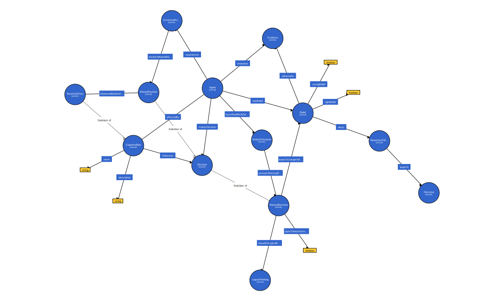

Examples of usage
The Individual maintains a belief despite new information that firmly contradicts it, is a fascinating area of cognitive bias that can manifest in various situations across different domains.
Here are few examples:
- Political Beliefs: When individuals are presented with factual evidence that contradicts their political beliefs or ideologies, instead of re-evaluating their stance, they may reject the evidence and further entrench their original beliefs. This can be particularly pronounced during heated political debates or when discussing polarizing issues such as climate change, gun control, or immigration policies.
- Health and Medicine: In the context of vaccines, presenting anti-vaccine advocates with scientific evidence showing vaccines' safety and effectiveness can sometimes increase their resistance to vaccination. Similar responses can be seen with people holding strong beliefs about alternative medicine or conspiracy theories about the pharmaceutical industry.
- Environmental Issues: Individuals with strong beliefs against the existence or causes of climate change may react to scientific evidence about human impact on the environment by doubling down on their stance, rejecting the evidence as biased or flawed.
Creating an Ontology
Classes:
- Agent (Person). Represents individuals subject.
- Belief. An agent consider Belief accordignly.
- Decision. Agent makes a decision about the asset accordingly.
- BiasedDecision
- RationalDecision
- CognitiveBias. A specified bias is activated with the agent choice.
- Evidence. The agent makes decision according to the evidence avaiable.
- ResponseToEvidence
- EmotionalAndCognitiveFactors
- Outcome
- LogicalThinking
- RealLifeSituation
Object Properties: